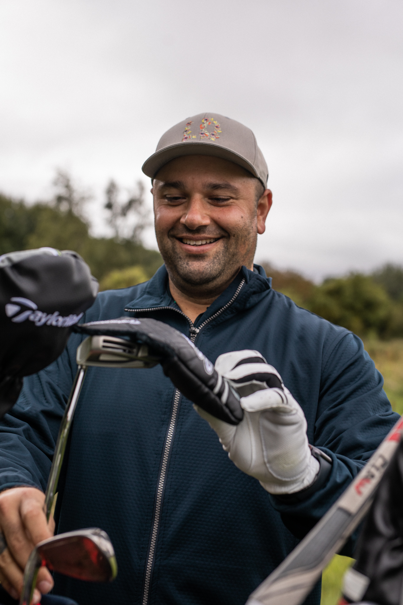

Lær de forskellige ord og udtryk der er i golf!
Af Tenna Degner Dahlstrøm - 23.07.2022A
Albatros: en score på t hul kaldes en albatros hvis man bruger 3 slag mindre end hullets par. Hvis man fx bruger 2 slag på et par 5 hul.B
Bogey: en score på et hul kaldes en vogey, hvis man har brugt 1 slag mere end hullets par. Hvis man fx bruger 5 slag på et par 4 hul.Birdie: en score på et hul kaldes en birdie, hvis man har brugt et alg mindre end hullets par. Hvis man fx bruger 3 slag på et par 4 hul.
Bunker: en bunker er et hul fyld med sand, som der findes ude på golfbanen. De bliver placeret strategisk svlære steder og er sævre at komme op af.
Buggy: en golfbil der kan køre spillerne rundt på banen.
Bag: en taske hvor du har alt dit udstyr i
C
Cut: et bestemt type slag, hvor bolden skruer fra venstre til højre.D
Driver: en kølle i baggen, der kan slå længst.Draw: et slag hvor bolden skruer fra højre mod venstre.
E
Eagle: en score på et hul kaldes en eagle, hvis man har brug 2 slag minde end huellets par. Fx hvis man har brugt 3 slag på et par 5 hul.F
Farirway: en fairway er den del af et hul, hvor græsset er klippet fint og bolden ligger godt.Fringe: fringe er det stykke græs der er lige rundt om greenen.
Fade: en fade er et slag hvor bolden skruer fra venstre mod højre.
G
Green: en green er der hvor flaget står og er det græs der er klippet aller kortest.H
Hybrid: en bestemt kølle, der er et mix mellem et jern og en kølle.Hole-in-one: et ustryk der bruges når man får bolden i hul med kun 1 slag.
Hook: en hook er når bolden skruer fra højre mod venstre.
Handicap: et handicap er et tal som en golfspiller har. Dette tal beskriver hvilket niveau golfspiller har.
I
J
Jern: et jern er en bestemt type udstyr man bruger til at slå til golfbolden.K
Kølle: en kølle beskriver en bestemt type udstyr man kan bruge til at slå til golfbolden med.L
M
N
O
Out of bounds: udtrykket beskriver en banes eler et huls ydergrænse. Denn grænse markeres typsik med hvide pæle.P
Pitch: utrykket bruges om et jern der kan bruge sitl at slå kort og præcistPutter: man bruger på teestedet til at puffe bolden i hullet.
Q
R
rough: rough er det høje græs der er rundt om firwayen.S
Sand-wedge: et bestemt jern der er specielt god til at slå bunkerslag med.T
Tee: bruges til at placerer bolden på når man står ved udslagssteder.Trolley: en golfvogn, hvor man kan transportere sin bag.
W
X
Y
Z
